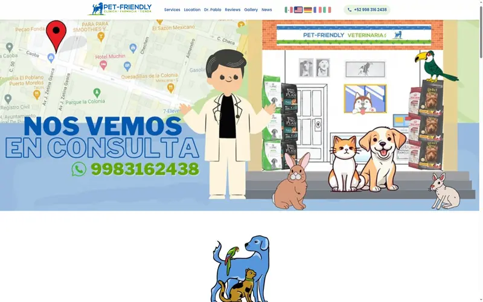

Pet Friendly Vet: From Facebook Page to Professional Website
When Dr. Pablo Rojo Mendoza needed a professional online presence for his veterinary clinic in Puerto Morelos, he had years of client reviews and business information scattered across Facebook. We transformed that content into a fast, professional website in under a day.
Visit Pet Friendly Veterinaria
See the finished website and learn more about Dr. Pablo's veterinary services.
Visit petfriendlyvet.comThe Challenge: Great Business, No Website
Dr. Pablo runs one of the most respected veterinary clinics in the Riviera Maya region. His Facebook page had glowing 5-star reviews, detailed service information, and years of happy client testimonials. But without a proper website, he was missing out on:
- Search engine visibility - Tourists and new residents searching for "veterinarian Puerto Morelos" couldn't find him
- Professional credibility - A Facebook-only presence doesn't convey the expertise of a specialist with diplomas in Internal Medicine and Clinical Pathology
- 24/7 information access - Clients couldn't easily find hours, services, or contact information without navigating Facebook
Our AI-Powered Solution
We used a combination of web scraping and AI content generation to build a complete website from existing Facebook content:
- Content Extraction - We scraped Dr. Pablo's Facebook business page, collecting service descriptions, photos, hours, contact information, and client reviews.
- AI Content Generation - Using language models, we transformed the raw Facebook content into professional, SEO-optimized website copy that accurately represents his services and expertise.
- Domain Registration - We secured petfriendlyvet.com - a memorable, professional domain that matches his clinic name.
- Fast, Mobile-First Design - Built a responsive website optimized for the mobile devices tourists use when searching for emergency vet care.
- SEO Optimization - Structured the content with proper meta tags, schema markup, and keyword optimization for local search visibility.
About Dr. Pablo Rojo Mendoza, MVZ
Credentials & Specializations
- Diplomas in Internal Medicine and Clinical Pathology
- Specialist in diagnostic cytology
- Member of the Latin American Society of Veterinary Clinical Pathology (SLAPCV)
- Bilingual: Native Spanish speaker, fluent English
Services
- Veterinary consultations and preventive care
- Clinical laboratory with in-house diagnostics
- Travel health certificates (domestic & international)
- Exotic animal care (birds, reptiles, wildlife)
- Pet cancer diagnosis and coordinated care
- Veterinary pharmacy and premium pet foods
Location & Hours
- Address: Puerto Morelos, Quintana Roo, Mexico
- Phone: +52-998-316-2438
- Hours: Mon-Sat 9AM-9PM, Sun 9AM-5PM
Results: Professional Presence in One Day
The finished website gives Dr. Pablo:
- Google visibility - Now appears in local search results for veterinary services
- Professional credibility - A polished web presence that reflects his expertise
- Easy updates - Simple content management for hours, services, and announcements
- Fast loading - Optimized for mobile users on vacation with spotty connections
Need a Website for Your Business?
We can transform your Facebook page, Google Business profile, or existing content into a professional, SEO-optimized website. Fast turnaround, fair pricing.
Get Started See the Result